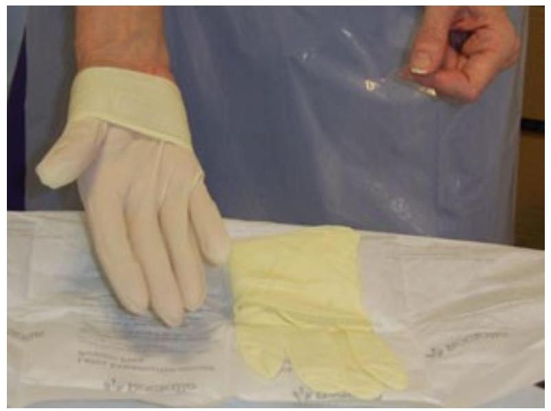

Asepsis Techniques, Wound Closure, HAIs, and Pressure Ulcers
Aims of an Aseptic Technique
Aseptic techniques are used to reduce the risk of post-procedure infections and to minimize the exposure of health care providers to potentially infectious microorganisms.
To prevent the introduction of potentially pathogenic micro-organisms into susceptible sites such as wounds or the bladder.
To prevent the transfer of potentially pathogenic micro-organisms from one patient to another.
To prevent staff from acquiring an infection from the patient.
Basic principles of asepsis
The use of sterile equipment for the procedure, which has been stored appropriately until use (e.g. dry, in an appropriate container, and within its expiry date).
Avoidance of direct contact with the susceptible site.
A 'non touch' technique - this involves the use of sterile gloves.
Effective hand hygiene. This means using the twelvestep decontamination technique that ensures all surfaces of the hands are covered. (NHS 2008).
As an addition to this, all clinical staff that undertake ANTT must have sleeves that are short or rolled back, no wrist jewellery/watches, no false nails and no stoned rings.
Effectively cleaned equipment such as dressing trolleys. If in patients' homes, best practice is for any furniture/equipment that can be considered as a working field to be cleaned and dried before use.
Appropriate use of Personal Protective Equipment (PPE).
Safe disposal of the used equipment at the end of the procedure.
Aseptic Dressing Technique
Three principles of aseptic dressing technique
Maintain asepsis
Expose the wound for the minimum time
Employ an efficient procedure
Indications for Aseptic Technique:
Care of wounds healing by primary intention, e.g. surgical incisions and fresh breaks.
Suturing of wounds.
Insertion of urinary catheters.
Insertion, re-siting or dressing intravenous cannulae or other intravascular devices, such as CVP lines, Hickman lines and Arterial lines.
Insertion of gastrostomy and jejunostomy tubes.
Insertion of tracheostomy tubes or chest drains.
Vaginal examination using instruments (e.g. smear taking, high vaginal swabbing, colposcopy).
Assisted delivery (e.g. forceps and ventouse).
Biopsies.
Indications for a Clean Technique
When Could a Clean Technique Be Used?
Dressing procedures for wounds that are healing by secondary intention such as chronic leg ulcers.
Tracheostomy site dressings.
Removing drains or sutures.
Endotracheal suction.
INFECTION CONTROL
Clean Technique
Clean technique refers to practises that reduce the number of infectious agents. These include:
Personal hygiene, particularly hand washing to reduce the number of infectious agents on the skin.
Use of barriers to reduce transmission of infectious agents
Environmental cleaning
Reprocessing of instruments and equipment between patient uses
Links in the Chain of Infection
Infectious agents such as bacteria, viruses, fungi or parasites.
A reservoir that supports the infectious agent, allowing it to survive and multiply.
A portal of exit that allows the infectious agent to leave the reservoir.
A mode of spread i.e. through direct or indirect contact or via airborne droplets.
A portal of entry - often the same route as the portal of exit e.g. the skin, respiratory, gastrointestinal, circulatory, urinary or reproductive system.
A susceptible host - i.e. a person at risk of infection. People are more vulnerable to infection when the balance of the body's defence system is upset, due to disease or devices that breach the body's defences.
Breaking any link in the chain will assist in preventing the spread of microorganisms (ICNA 2003).
Chain of infection
Techniques used to contribute to breaking the links of the chain
Standard Precautions: hand hygiene; wearing personal, protective equipment; aseptic techniques; safe handling of sharps, waste and linen.
Decontamination of patient care equipment
Environmental cleanliness - ensuring that standards of hygiene and cleanliness adhere to local and national guidelines.
Means for spread of infection
Direct contact - e.g. the hands of others.
Indirect contact - objects such as instruments, clothes and equipment.
Dust particles or droplet nuclei suspended in the atmosphere.
HAND HYGIENE
Hand hygiene is a means of achieving a reduction in, or removal of, visible soiling and transient or resident micro-organisms.
Transient micro-organisms are picked up during daily activities and shed on skin scales. They can be effectively removed, or reduced to a low level by hand washing.
Resident micro-organisms are permanently resident on the skin and can only be reduced to a low level for a short time.
Hand washing is the single most important means of preventing the spread of health care acquired infections (HCAls).
Types of Hand Hygiene:
Clinical Hand Wash: a 30 seconds hand wash using liquid soap or equivalent and pat hands dry using a clean paper towel.
Surgical Hand Wash: a threeminute surgical scrub using a surgical scrub solution, eg povidoneiodine, and pat hands dry using a clean paper towel.
Examples of PPE for Procedures
Procedure
Hand Washing
Clean Gloves
Sterile Gloves
Mask/ Hat
Eye Wear
Gown
General Medical Examination
Routine hand wash before/after procedure
For contact with broken skin / rash/ mucous membrane
For splash risk
Wound examination/ dressing
Routine hand wash before and after procedure
For contact with body substances
For direct contact with wound
For wound irrigation
For grossly infected wounds
Suctioning: ETT, Tracheostomy
Routine hand wash before and after procedure
Dominant hand (open suction system)
Mask
Yes
Tips for Injection Safety
Practices that can harm recipients and should be avoided
Changing the needle but reusing the syringe.
Loading the syringe with multiple doses and injecting multiple doses.
Applying pressure to the bleeding sites using a finger.
Leaving the needle in the vial to withdraw additional doses.
Touching the needle.
Reusing a syringe or needle.
Practices that can harm the health care worker and should be avoided
Recapping, bending, breaking, and cutting needles.
Placing needles on a surface or carrying them any distance prior to disposal.
Practices that can harm the community and should be avoided
Leaving used syringes in areas with public access.
Giving or selling used syringes to vendors who resell them.
Providing used syringes to patients for personal reuse.
Preparation of Patient for Dressing Change
Explain the procedure, to gain consent and cooperation.
Draw screens around the bed and ensure adequate light. Clear the bed area, close windows, turn off fans, etc.
Adjust bedclothes to permit easy access to the wound but maintain warmth and dignity.
Assess the wound dressing.
Check patient comfort, e.g. position, convenience, need for toilet, etc.
Administer analgesics as appropriate and allow time to take effect.
Preparation of Nurse for Dressing Change
Consult the care plan to determine the type of dressing required, frequency of change, etc.
Make sure hair is tied back securely.
Wash and dry hands thoroughly.
An apron should be worn. Additional protective clothing may be necessary if indicated by the patient's condition
Preparation of Equipment for Dressing Change
Dressing trolley or other suitable surface
Dressing pack, syringe (for irrigating the wound), cleansing solution and new dressing according to the care plan/local policy
Alcohol hand-rub or hand washing facilities
Clean the trolley or other appropriate surface according to local policy
Gather the equipment, check the sterility and expiry date of all equipment and solutions. Place these on the bottom of the trolley
Requirements (Dressing Trolley Setup)
Top shelf
Sterile dressing pack containing:
2 pairs of dressing forceps
2 pairs of dissecting forceps
3 gallipots
10 cotton wool swabs
3 gauze swabs
1 kidney dish
1 hand towel/ 4 paper towels
Sterile gloves
Petri dish
Bottom shelf
Pair of scissors
Adhesive tape/ bandage
Antiseptic solutions as required
Kidney dish or jug with disinfectants
Topical drugs if required
Extra sterile swabs and gauze
Sterile gloves
Receiver for used swabs
Dressing mackintosh
Aseptic Dressing Technique Procedure
Take the trolley to the bed area.
Adjust the bed to a safe working height to avoid back strain.
Opening Dressing Pack: Remove the dressing pack from its outer packaging, place it on the clean trolley/surface. Using your fingertips and touching the edges of the paper only, open the pack and lay it flat to create a sterile field.
Adjust any remaining bedclothes to expose the wound, then loosen the existing dressing but do not remove it. Disinfect hands. Ensure your hands are completely dry before proceeding.
Open the yellow waste bag and put your hand inside so that the bag acts as a glove. Use this to remove the soiled dressing. Inspect the dressing to determine the type and amount of exudate.
Turn the bag inside out so that the dressing is contained within it. Use the self-adhesive strip to attach the bag to the side of the trolley or other convenient place close to the wound.
Taking care not to touch the outside of the gloves, put on the sterile gloves. Take your right hand glove in your left hand and place it more than half way up and over your right hand. Take the cuff of your left hand glove with your right hand and put your left hand fingers inside the glove. Adjust the gloves over your hands.

Use a gauze swab dipped in cleansing solution to clean around the wound to remove blood, etc. If the wound itself needs cleaning, use a syringe primed with solution in one hand and a gauze swab on the skin below the wound in the other. Making sure that neither the syringe nor gauze come into contact with the wound, allow the solution to flow into the wound, collecting the solution in the gauze swab held below the.
Use fresh gauze swabs to dry around the wound (not the wound itself). Use each swab once only and swabbing away from the wound. Peel off the backing paper and apply the new dressing.
Wrap all used disposable items in the sterile field and place in the waste bag. Remove gloves and discard into waste bag.
When the dressing is secure, make the patient comfortable and assist the patient as necessary into a comfortable position. Readjust the bed to a safe height. Replace bed rails if necessary. Dispose of the waste bag in clinical waste.
Remove apron and wash hands. Return any unused items to the stock cupboard and clean the trolley according to local policy. Document the care given and the condition of the wound. Report any changes or abnormalities.
Dressing Changes Using Strict Aseptic Technique
The nurse shall:
Observe the surgical wound dressing every shift and document status;
Report any signs of infection or dehiscence to the physician immediately (redness, swelling, in duration, tenderness, separation of the incision, odor, etc.);
Monitor each shift for changes in skin integrity;
Ensure patient is turned every two (2) hours while in bed. Document turning, repositioning schedule per flow sheet or in nurses narrative notes;
Ensure patient changes positions while in chair or wheelchair every hour;
Stitches, Clips or Staple Removal
Normally stitches, clips or staples are removed within approximately 10 days of the surgical procedure unless otherwise advised by the health professional.
Staples
More rapidly placed
Less foreign body reaction
Scalp, trunk, extremities
Do not allow for meticulous closure
Staples can be applied more rapidly than sutures. They are associated with a lower rate of foreign body reaction and infections.
Able to use in scalp, on trunk and extremities. Not over joints.
Do not allow for meticulous closure.
Disadvantages of Staples
Less meticulous closure
May interfere with some older generation imaging techniques (CT, MRI)
Bandages
Purpose:
Holds a dressing in place over a wound
Creates pressure that controls bleeding
Helps keep the edges of the wound closed
Secures a splint to an injured part of the body
Provides support for an injured part of the body
Bandage is too tight if:
The skin around the bandage becomes pale or bluish in color (cyanotic).
There is a bluish tinge to the nearest fingernails or toenails.
The victim complains of pain, usually only a few minutes after you apply the bandage.
The skin beyond the bandage (distal) is cold.
The skin beyond the bandage (distal) is tingling or numb.
You cannot feel the pulse beyond the bandage (distal), or it is very weak.
Capillary refill is absent or diminished in the fingernails or toenails beyond the bandage (when you press on the nail, the nailbed does not immediately turn pink again)
The victim cannot move his or her fingers or toes.
Types of Bandages
Triangular Bandages: Support fractures and dislocations, Apply splints, Form slings, Make improvised tourniquets
Roller Bandages
Terminology
Occlusive: Waterproof and airtight
Gauze pads: Commercially manufactured, individually wrapped sterile pads made of gauze
Special pads: Large, thickly layered bulky pads used to control bleeding and stabilize impaled objects
Bandage: Material used to hold a dressing in place
Triangular bandage: Triangle-shaped piece of cloth used to apply splints and form slings
Slings
Place one end of the base of an open triangular bandage over the shoulder of the uninjured side.
Allow the bandage to hang down in front of the chest so its apex will be behind the elbow of the injured arm.
Bend the arm at the elbow with the hand slightly elevated (four to five inches). When possible, the fingertips should be exposed so you can monitor for impaired circulation.
Bring the forearm across the chest and over the bandage.
Carry the lower end of the bandage over the shoulder of the injured side, and tie a square knot at the uninjured side of the neck; make sure the knot is at the side of the neck.
Twist the apex of the bandage and tuck it in or pin it at the elbow.
Absorbable sutures are usually used for closure of deeper structures deeper than the epidermis.
In general, synthetic sutures are less reactive and have greater tensile strength than sutures from natural sources, such as catgut. They increase the time during which the healing wound retains 50% of its tensile strength from less than 1 week to as long as two years.
Chromic gut lasts for up to 2 weeks and is associated with tissue reactivity.
Deep sutures help relieve skin tension, decrease dead space and hematoma formation, and probably improve cosmetic outcome.
Deep sutures should be avoided in highly contaminated wounds, where they increase the risk of infection.
Sutures through adipose tissue do not hold tension, increase infection rates, and should be avoided.
Adhesive Tapes
Less reactive than staples
Use of tissue adhesive adjunct (benzoin)
Poor outcome in areas of tension
Seldom used for primary closure
Use after suture removal
Surgical adhesive tapes are less reactive than staples, but they require the use of adhesive adjuncts that increase local induration and wound infection.
Tape alone cannot maintain wound integrity in areas subject to tension.
They are seldom recommended for primary wound closure, but are often used after suture removal to decrease tension on the wound until they fall off.
Advantages and Disadvantages of Adhesive Tapes
Advantages:
Disadvantages:
Lower tensile strength than sutures
Highest rate of dehiscence
Requires use of toxic adjuncts
Cannot be used in areas of hair
Cannot get wet
Tissue Adhesives
Dermabond, Ethicon
Topical use only
Outcome equal to 5-0 and 6-0 facial repairs
Less pain and time
Slough off in 7-10 days
Act as own dressing
No antibiotic ointment
Advantages and Disadvantages of Tissue Adhesives
Advantages:
Resists bacterial growth
Painless
Low cost
No risk of needle stick
Disadvantages:
Lower tensile strength than sutures
Dehisces for high tension areas (joints)
Cannot get wet
Post-procedural Care
Dressing for 24-48 hours
Topical antibiotics
Start cleansing in 24 hours
Suture/staple removal
Face 3-5 days
Non-tension areas 7-10 days
Tension areas 10-14 days
The Interrupted Stitch
Instrumentation
Hemostat
Scissors
Forceps with teeth
Plain forceps
Control syringe
Tub for saline
Gauze
Sterile towels
Syringe and splash shield
Technique
Finger tip grip, Palm grip, Grip needle one-third of way from threadCurl needle into dermis of $1^{\text{st}}$ sideCurl needle through parallel opposite subcutaneous sideTie square knot with at least two braidsRepeat three to four throws
An infection acquired in hospital by a patient who was admitted for a reason other than that infection.
An infection occurring in a patient in a hospital or other health care facility in whom the infection was not present or incubating at the time of admission.
This includes infections acquired in the hospital but appearing after discharge, and also occupational infections among staff of the facility
Types of Nosocomial Infections
The most common types of nosocomial infections are:-
Urinary infections - most common. 80% of these infections are associated with the use of an indwelling catheter.
Surgical site infection (0.5% to 15%) - is indicated by the presence of purulent discharge around the wound or the insertion site of a drain, or by the presence of cellulites which is emanating from the wound. The extent of contamination during the surgery is the main risk factor. Contamination varies with the length of the procedure and the patient's general condition.
Nosocomial pneumonia
Impact of nosocomial infections
They are a significant burden to patients and public health.
They are a major cause of death and increased morbidity in hospitalized patients.
They may cause increased functional disability and emotional stress and may lead to conditions that reduce quality of life.
Not only do they affect the general health of patients, but they are also a huge burden financially due to the increased stays that patients with nosocomial infections require.
The increased length of stay varies from 3 days for gynecological procedures to 19.8 days for orthopedic procedures.
Other costs include additional drugs, the need for isolation, and the use of additional studies.
There are also indirect costs due to loss of work.
SKIN INTEGRITY AND WOUND CARE
SKIN INTEGRITY
The skin is the largest organ in the body.
Intact skin refers to the presence of normal skin and skin layers uninterrupted by wounds.
The appearance of the skin and skin integrity is influenced by internal factors e.g genetics, age, individual health and external factors e.g activity.
PRESSURE ULCERS
A pressure ulcer is any lesion caused by unrelieved pressure that results in damage to underlying tissue (U.S Public Health service's panel for the prediction and prevention of pressure ulcers in Adults {PPPPA\}, 1992)
Also known as decubitus ulcers, pressure sores or bed sores.
Etiology of pressure ulcers
Occur due to localized ischaemia.
When blood cannot reach the tissues, the cells are deprived of oxygen and nutrients. The waste products of metabolism accumulate in the cells and the tissue consequently dies.
Prolonged, unrelieved pressure also damages the small blood vessels.
Risk factors
Immobility - reduction in the amount and control of movement a person has e.g due to paralysis, weakness, pain
Inadequate nutrition causes weight loss, muscle atrophy and loss of subcutaneous tissue
Feacal and urinary incontinence - moisture promotes skin maceration
Decreased mental status - e.g unconcious or heavily sedated
Diminished sensation - paralysis, stroke
Excessive body heat - elevated body temperature increases the metabolic rate thus increasing the cells' need for oxygen
Advanced age - brings several changes in the skin
Chronic medical conditions e.g DM
Other factors - poor lifting techniques, incorrect positioning, repeated injections on the same site, hard support surfaces, incorrect application of pressure - relieving devices
Nursing management for Pressure Ulcers
Diagnosis
Risk for impaired skin integrity
Impaired skin integrity
Impaired tissue integrity
Risk for infection
Pain related to nerve involvement within the tissue impairement or as a consequence of procedures used to treat the wound.